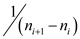
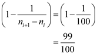
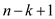
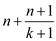

a.
Define some random variables which are used to determine the
expected value denoted by the given counter after  increment
operations. For:
increment
operations. For:
• After theincrement, the incremented value shown by the given counter is denoted as.
• Suppose the value of counter after increment
operations is denoted as . Then
is
as follows:
. Then
is
as follows:
Then, the expected value will be computed using the linearity of expectation as given below:
Now, apply the linearity of expectation, then user will obtained:
• Now, suppose that the counter holds a value  (which may
also represents) at the starting of the th
increment, then the value increased is represented by.
(which may
also represents) at the starting of the th
increment, then the value increased is represented by.
Therefore, the probability of incrementing the counter is .
Now,
• Therefore from the above equation, the value of .
• Now, the value of can be obtained as follows:
Hence, the expected value shown by the counter, after
increment operations are applied, is exactly
.
b.
Consider the random variables and
defined in the part (a). Assume that  denotes the
variance. Then the calculation of , for
,
will be as follows:
denotes the
variance. Then the calculation of , for
,
will be as follows:
• It is already known that is independent.
Therefore,
• It is given that, . Thus the calculation of will be as follows:
Therefore, the following calculation gives the probability of increasing the counter value due to the increment operation.
Thus the probability, at which the counter increases the value on increment operation is .
Also, the probability of unchanging the value on the counter is given as follows

• Now, apply the formula of variance and replace the corresponding values:
Hence, the variance in the value shown by the register
after
increment operations is,
.
a.
Consider the following RANDOM-SEARCH algorithm to find the
element x in  array:
array:
Explanation:
• First program get the length of array and store it to variable n.
• After that, it initializes an array T which returns whether the index i is picked earlier or not.
• Using while loop, program creates a random number and checks it whether it is chosen before.
• If it is not chosen before it will check the value at that index an increment the counter.
• As soon as program finds the value it returns true.
• If there doesn’t exist a value then as soon as counter becomes equal to n. It will stop the execution in while loop and return false.
b.
• Suppose there is an array which
contains n elements. There is a unique element x in
array.
• The probability of having this unique element at index i is. For all other indices other than i, the probability of having that unique element is.
• Random Variable x = Number of trials before success that is number of iterations until program will finds the unique element.
The expectation of X is sum of the product of index i to its probability.
• Now this is Geometric distribution and the expected value of geometric distribution is , where p is the probability of success.
Therefore, the expected value is
Therefore, n index are required to visit before getting x in array A .
c.
• Using above procedure the only thing that will change is the probability of success is, and losing is.
The Expectation is now,
Again the above sequence is geometric distribution so the expected value is, where p is the probability of success.
•
Therefore,  index are required to visit to find x in
array A .
index are required to visit to find x in
array A .
d.
• Suppose there is an array which
contains n elements. There is an element x which does
not lies in array A. In RANDOM-SEARCH algorithm, before
returning the false (unsuccessful search) it has to visit each
index at least once, it may possible that it visit any index more
than once.
• This problem is similar as the problem provided in section 5.4.2 in the textbook in which the expected number is
Hence, in RANDOM-SEARCH algorithm before returning the false, it has to traverse index.
e.
• Consider a DETERMINISTIC-SEARCH procedure which is same linear search. In DETERMINISTIC-SEARCH procedure one by one each element is traversed to find an element x in array A.
• Suppose there is an array which
contains n elements. There is a unique element x in
array. Therefore the average expected number of indexes must be
visited before finding an element x in array A using
DETERMINISTIC-SEARCH is as follows:
• Therefore, in average case DETERMINISTIC-SEARCH procedure takes time to find x element in A array. In worst case, the element x lies at the end of A array.
Therefore, the time taken DETERMINISTIC-SEARCH procedure to find x in worst case is O( n ).
f.
• Suppose there is an array which
contains n elements. There is an element x in
array which is repeated k times. Therefore the average
expected number of indexes must be visited before finding an
element x in array A using DETERMINISTIC-SEARCH is as
follows:

• When there is no element which is equal to x up to index in A array it implies that after n-k+1 index to n the value of xi is x. Therefore, all remaining k elements are x elements. Thus,
• Therefore, in average case DETERMINISTIC-SEARCH procedure takes time to find x element in A array. In worst case, the k, x element lies at the end of A array.
Therefore, the time taken DETERMINISTIC-SEARCH procedure to find x in worst case is  .
g.
Suppose there is an array which
contains n elements. There is an element x which does
not lie in array A.
• In DETERMINISTIC-SEARCH procedure, it searches all n elements one by one. After searching n elements when it does not find x then it will return false.
• The average case in the given scenario is equivalent to the worst case as the element the program is finding does not lie in the given array.
• So, in both cases the program will traverse the whole array to return false with running time equal to the number of elements in the array.
Therefore the time required in unsuccessful
search is  in
both average and worst case.
in
both average and worst case.
h.
Consider a SCRAMBLE-SCRATCH procedure in which at first randomly permute the array and then use linear approach to find an element x.
Suppose there is an array which
contains n elements. There is an element x in
array which is repeated k times.
Case 1: when value of. It mean an array A does not contain an element x. Therefore the total times taken to traverse the n elements are sum of both random permutation and linear search, that is
Case2: when value of . It means
among n elements an array A contains one x
element. Therefore the time required to determine x element
is the sum of time calculated in part (b) and part (e). Therefore
total running time
. It means
among n elements an array A contains one x
element. Therefore the time required to determine x element
is the sum of time calculated in part (b) and part (e). Therefore
total running time
Case 3: The generalize case when k, x elements are repeated in A array. Therefore the time taken by SCRAMBLE-SCRATCH procedure to find element x in A array becomes:

i.
Consider an array which
contains n elements. There is an element x in
array which is repeated K times.
|
RANDOM-SEARCH |
NON-DETERMINISTIC |
SCRAMBLE |
|
|
K=0 |
n log n |
n |
2n |
|
K=1 |
n |
n |
|
|
K=k |
|
n-k |
Among all searching procedure DETERMINISTIC-SEARCH procedure is best. It is because the time taken by DETERMINISTIC-SEARCH procedure in worst case is less than other two procedures.